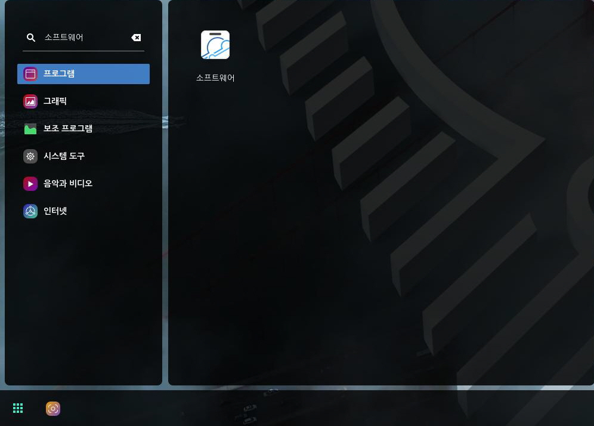
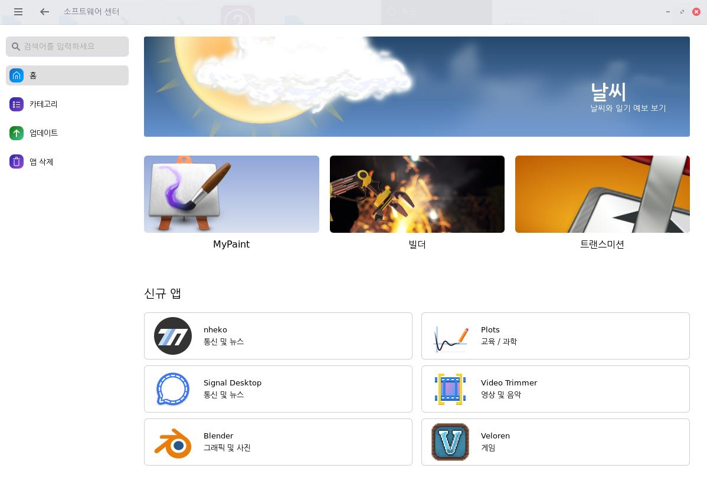
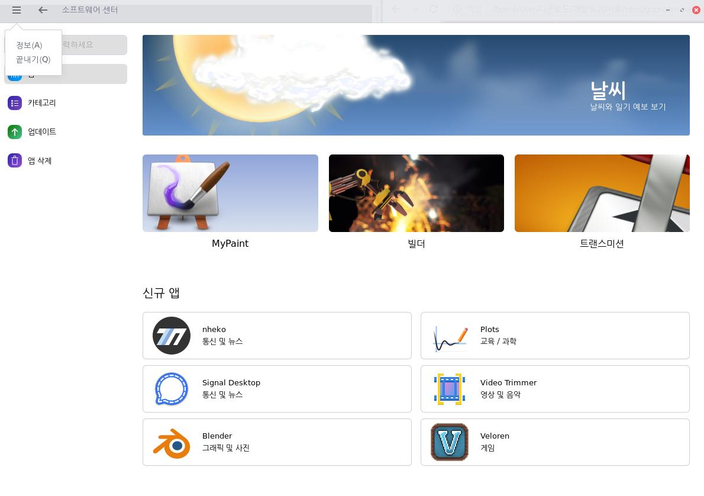

다음 방법을 사용하여 소프트웨어 센터를 실행할 수 있습니다.좌측 하단 [시작]아이콘을 클릭하여 메뉴창을 열고 검색 창에 [소프트웨어]를 입력하여 [소프트웨어 센터]
를 실행합니다.
소프트웨어 홈 화면에서 신규 앱, 추천 앱 등을 확인할 수 있으며, 좌측 메뉴바의 기능들을 사용하여 원하는 앱을 검색, 설치, 삭제할 수 있습니다. 소프트웨어 센터에서 앱의 이름, 아이콘 또는 그림을 클릭하면 해당 앱 상세화면 페이지로 이동합니다. 소프트웨어 센터에서 [뒤로가기] 아이콘을 클릭하여 현재 화면으로 넘어오기 이전 페이지로 이동할 수 있습니다.[메뉴바] 아이콘을 클릭 후 [정보]를 선택하여 소프트웨어 센터 정보를 확인할 수 있고, [끝내기]를 선택하여 소프트웨어 센터를 종료할 수 있습니다.